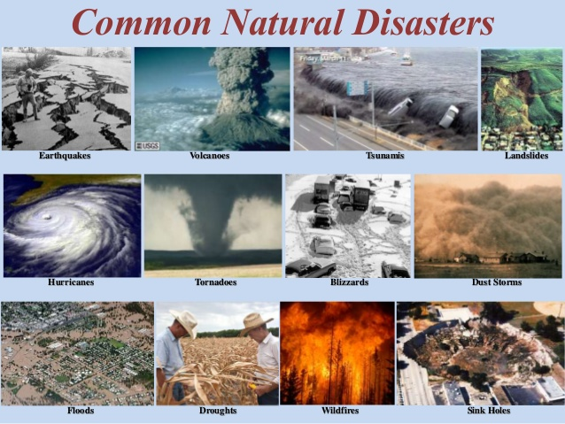
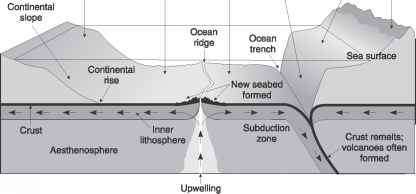

About Natural Disasters!

Natural Disasters are major storms or events that
are produced through the natural processes happening on earth.
From atmospheric
conditions forming deadly storms to geological conditions forming deadly
volcanos or earthquakes, these deadly phenomenons claim lives and destroy property
annually.
They form all over the world in countries and areas with warm, cold, dry and moist climates and environments.
Different Types Of Natural Disasters:
An explanation of Causes
Geologic Movements
The earth is made up of layers called tectonic plates and these plates lay along a layer of magma benetah the crust called mantle.
The mantle constantly created a cycle beneath the earth which is also known as Mantle Convection. This process causes the plates to and shift over a period of time and eventually causes
them to come against each other (Insurgent), break away from each other (Divergent) and slide against each other (Transform). The tension released from these movements
is brought to the surface nad causes different natural disasters.

Atmospheric Conditions
The atmospheric conditions can create large wind masses of cold air that come into contact with warm moist air over land or bodies of water and create large storms.
These storms can create devastation on land through high speed funnels or slowly gain power as they pass over a large body of water and absorb warm air to further intensify
their ferocity as they pass over a coast.


There are various ways to respond when a natural disaster happens but they all follow four main phases.
Learn More